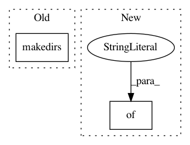

b18167d070cc0563998de54d54c8bd6757dfe7b3,art/classifiers/tensorflow.py,TFClassifier,save,#TFClassifier#Any#Any#,456
Before Change
full_path = os.path.join(path, filename)
folder = os.path.split(full_path)[0]
if not os.path.exists(folder):
os.makedirs(folder)
saver = tf.train.Saver()
saver.save(self._sess, full_path)
logger.info("Model saved in path: %s.", full_path)
After Change
builder = saved_model.builder.SavedModelBuilder(full_path)
signature = predict_signature_def(inputs={"SavedInputPhD": self._input_ph},
outputs={"SavedOutputLogit": self._logits})
builder.add_meta_graph_and_variables(sess=self._sess, tags=[tag_constants.SERVING],
signature_def_map={"predict": signature})
builder.save()
In pattern: SUPERPATTERN
Frequency: 4
Non-data size: 2
Instances
Project Name: IBM/adversarial-robustness-toolbox
Commit Name: b18167d070cc0563998de54d54c8bd6757dfe7b3
Time: 2019-04-16
Author: M.N.Tran@ibm.com
File Name: art/classifiers/tensorflow.py
Class Name: TFClassifier
Method Name: save
Project Name: AllenCellModeling/pytorch_fnet
Commit Name: b58d873bc4344117bf8a2b42651e9acb5aeddb4e
Time: 2018-01-22
Author: chek.o@outlook.com
File Name: predict.py
Class Name:
Method Name: main
Project Name: nilearn/nilearn
Commit Name: e3d577b5595af3e1c9a05d3be84dbdf1a7c4aa20
Time: 2020-07-29
Author: jerome@dockes.org
File Name: nilearn/datasets/tests/test_atlas.py
Class Name:
Method Name: test_fetch_atlas_aal
Project Name: interactiveaudiolab/nussl
Commit Name: 5cdb40f9328d44aa88f14cff8c3b341069346121
Time: 2019-08-06
Author: prem@u.northwestern.edu
File Name: nussl/deep/train/trainer.py
Class Name: Trainer
Method Name: save